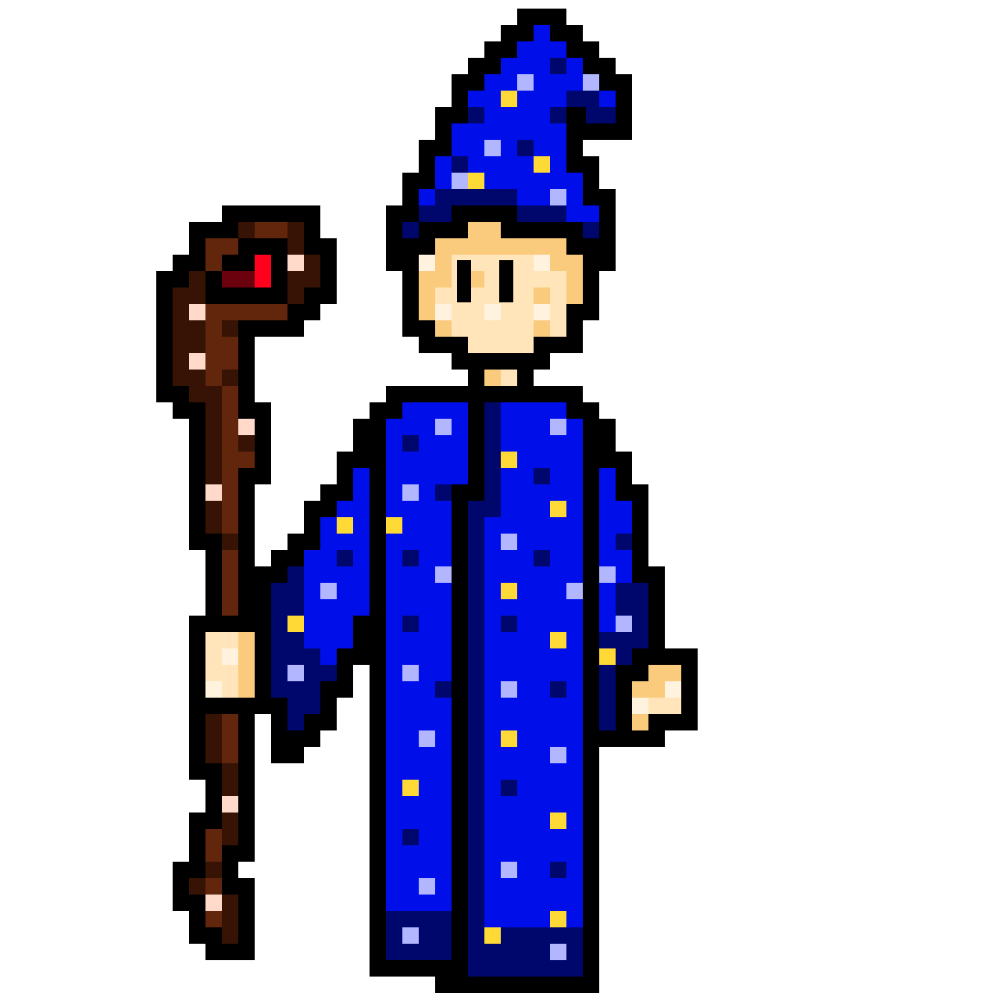
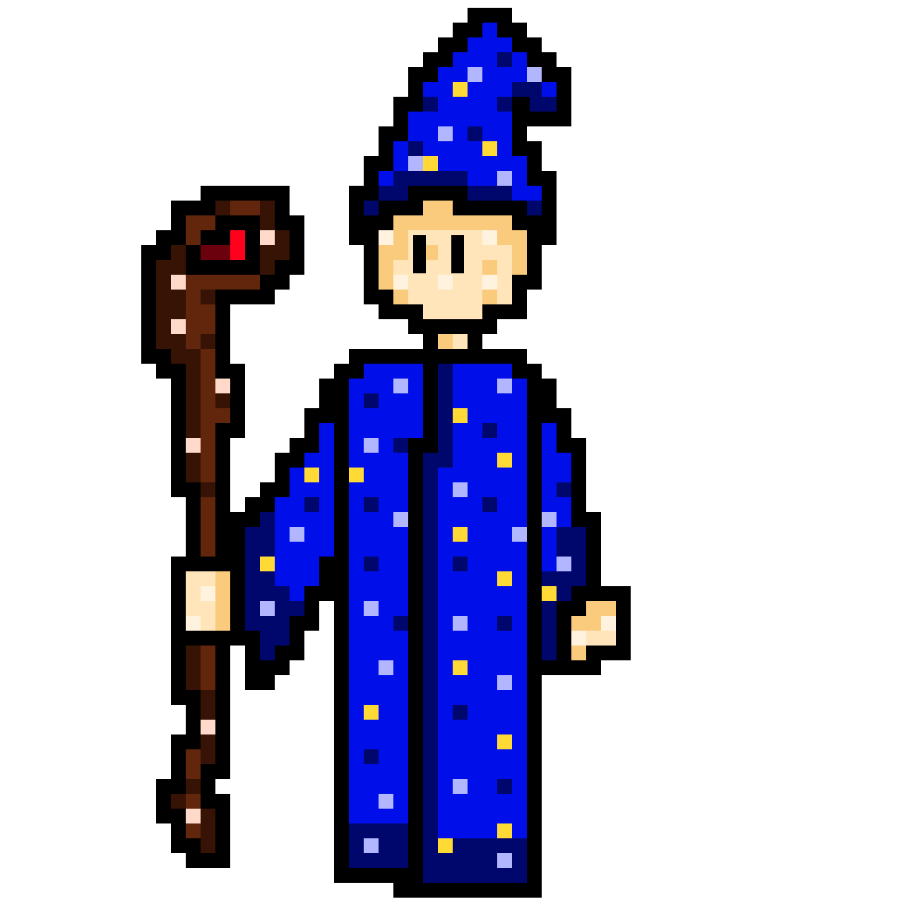

Liora sabe que o mago Arion pode ajudar a desvendar os símbolos, mas não queria pedir ajuda pois ela não gostava de magos, eles eram trapaceiros. Liora pensou muito, e foi até o mago. Ele morava em uma pequena cabana na floresta sombria, liora vai ate ele e pede ajuda, ele concorda e desvenda 2 dos simbolos, mas não consegue desvendar os outros 2 então ele fala para eles procurarem a fada seraphina que ela conseguiria desvendar os outro dois simbolos, mas liora era teimosa não queria pedir ajuda da fada. Qual opição Liora deve escolher?